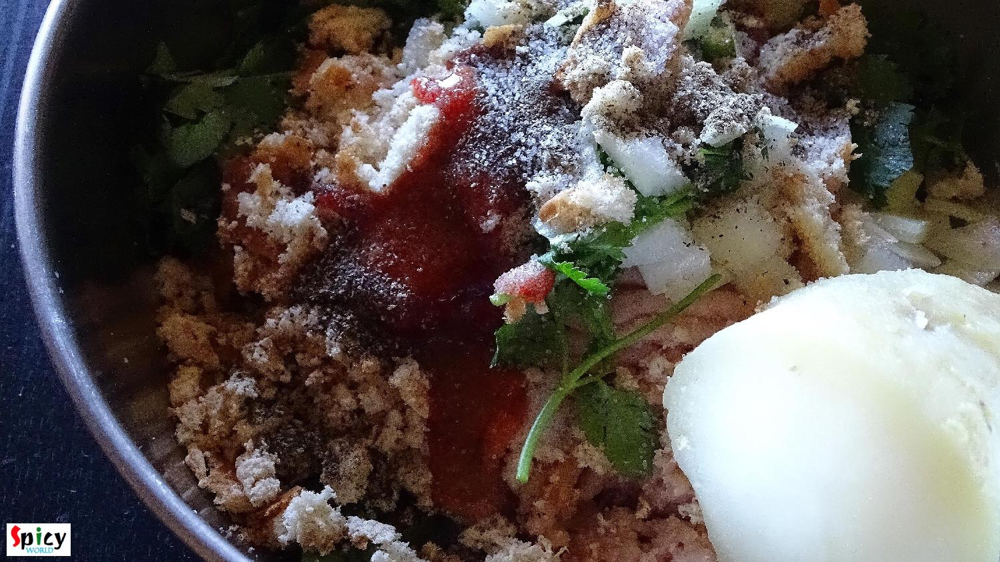
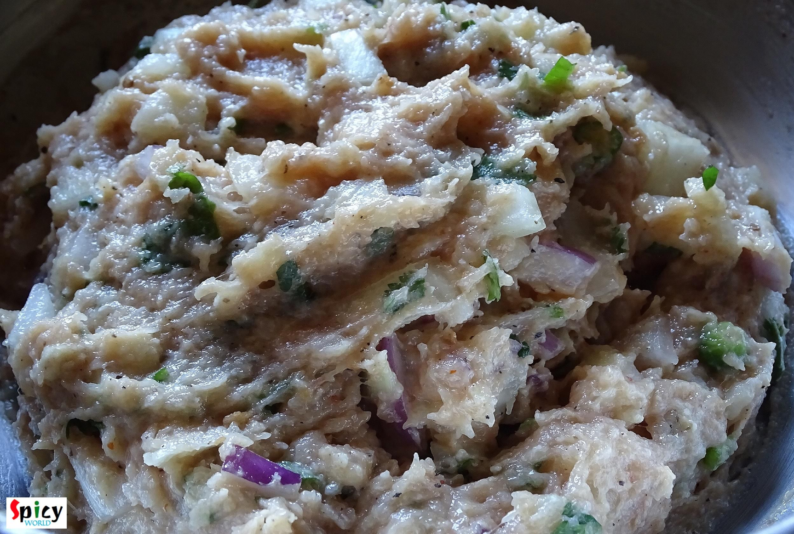
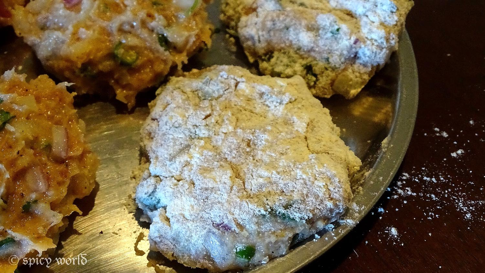
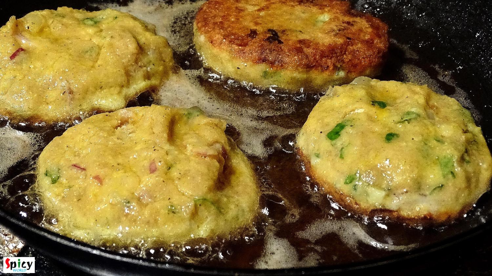
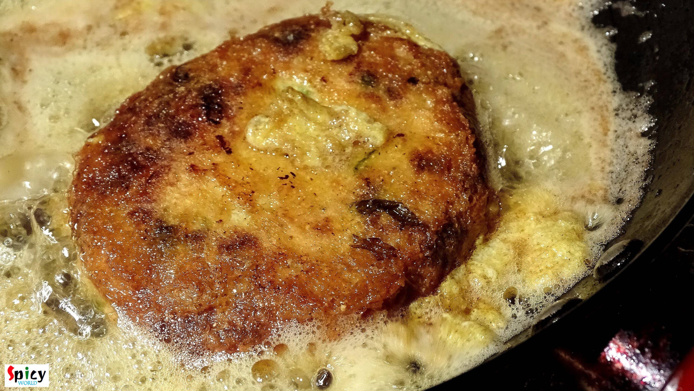
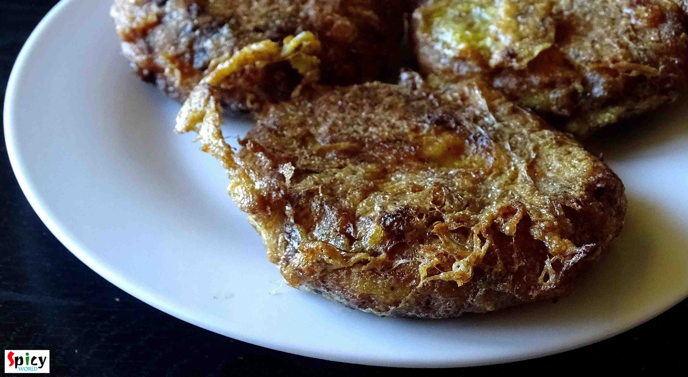

Jali Kabab / Net Kabab (Kebab)
I guess many people are not familiar with this name, believe me, I was also not. 'He' is a big fan of kababs, that's why I always try to find new recipes for kababs. This year, on his birthday, I made these 'jali' kababs. The concept and taste were totally new to us. But luckily 'net kabab' brought a big smile on his face and that was my real satisfaction. 'Jali' means net and they have net like texture. You can make this with mutton / beef / chicken. After trying this I can tell you one thing that you will be finding excuses to make these kababs.
")
Ingredients
- 3 cups of minced meat.
- 2 - 3 breads soaked into water.
- 1 small onion finely chopped.
- 2 Teaspoons chopped ginger and garlic.
- 3 Teaspoons chopped green chilies.
- 4 - 5 Teaspoons chopped coriander leaves.
- 2 Teaspoons of tomato ketchup.
- 3 Teaspoons of chilli sauce.
- 1 Teaspoons black pepper powder.
- Salt.
- 1 egg.
- Some bread crumbs.
- While oil for deep frying.
")
Steps
Take a mixing bowl.
Add minced meat, soaked bread (binding element), salt, black pepper powder, onion, ginger, garlic, green chilies, coriander leaves, tomato ketchup and chilli sauce.

Mix the entire thing very well with your hand.

Now divide the mixture into similar portions of kababs.
All of them will be very fragile, so carefully coat them in bread crumbs and give them oval shape.

Now beat an egg.
Dip one coated kabab in this beaten egg and place it in the hot oil.
Repeat the same process with all of them.

Fry them from both sides till golden in color.
This frying process will take time.
Before removing from the pan, sprinkle some more beaten egg on the kababs and fry them for just 1-2 minutes.
By this process the kababs will get 'net' like texture.

Then keep them on a tissue paper to absorb the extra oil.

Your jali kabab is ready ...
- Serve them hot with ketchup or chilli sauce ...
 (Final)")